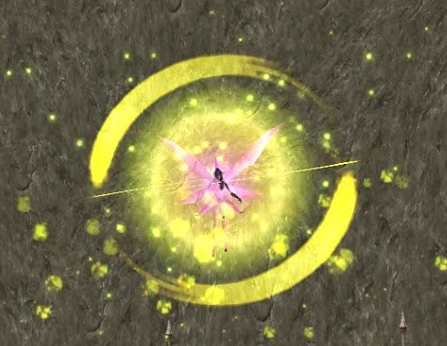
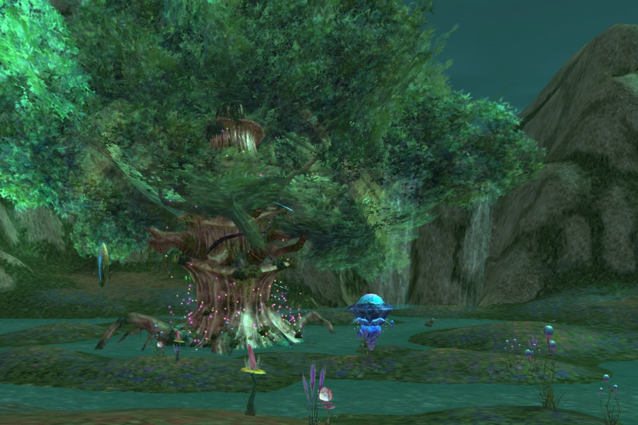
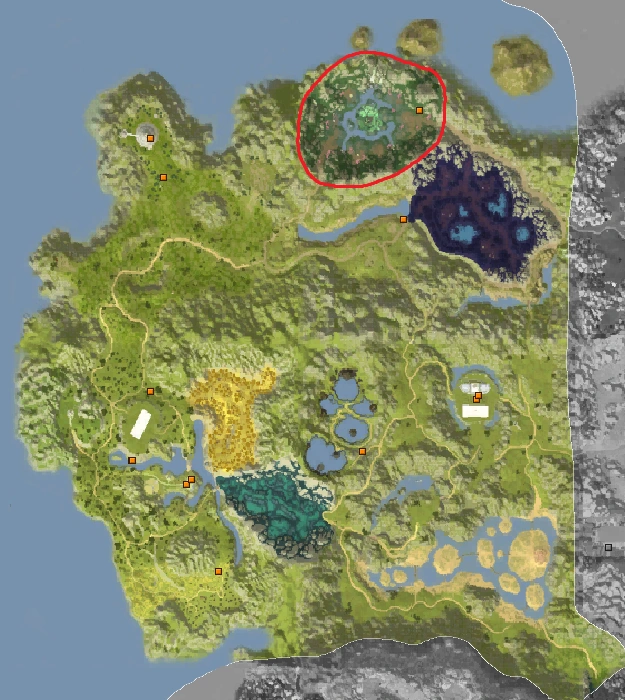

Wind Pixie

About Wind Pixie
Can be tamed in Fairy Woods (see images of Fairy Woods below).


This is the most used pet in the game thanks to the flat Int and Agility it provides through unity, potion, and encouragement.
It's a physical melee pet (but attacks from short range) — logical, right?
Ideal for: Slayer (if you can't tank), Deadeye, VM (if you can't tank), Overlord.
If you are looking for a pet to farm at Lake Kaia or Pigs as a pet class, this is the one!
Skills